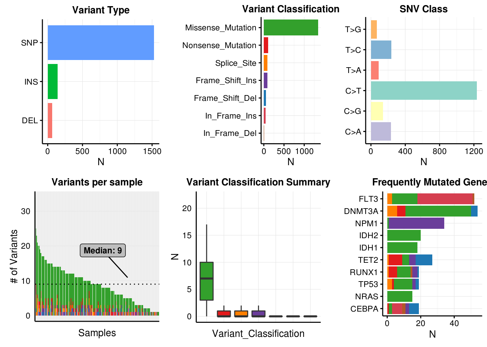
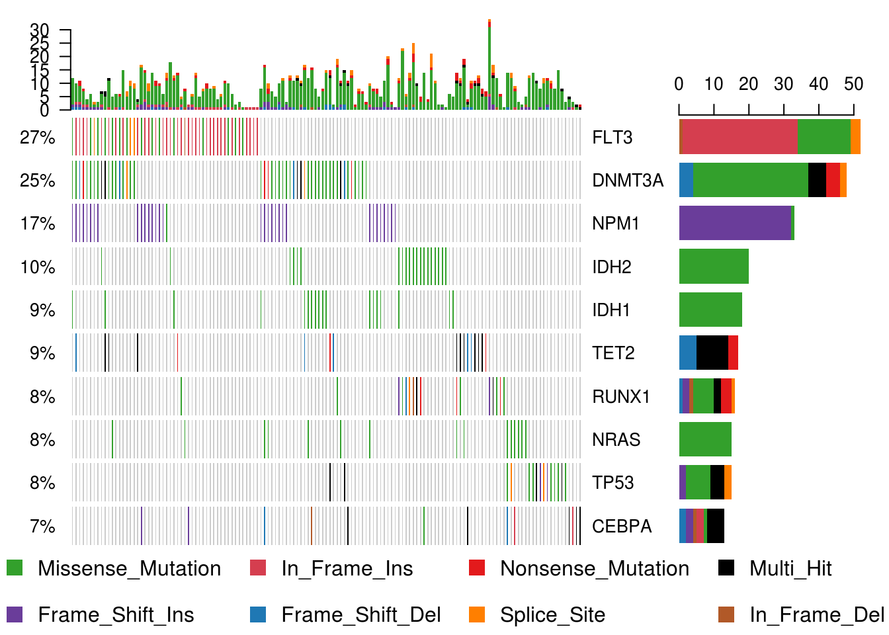
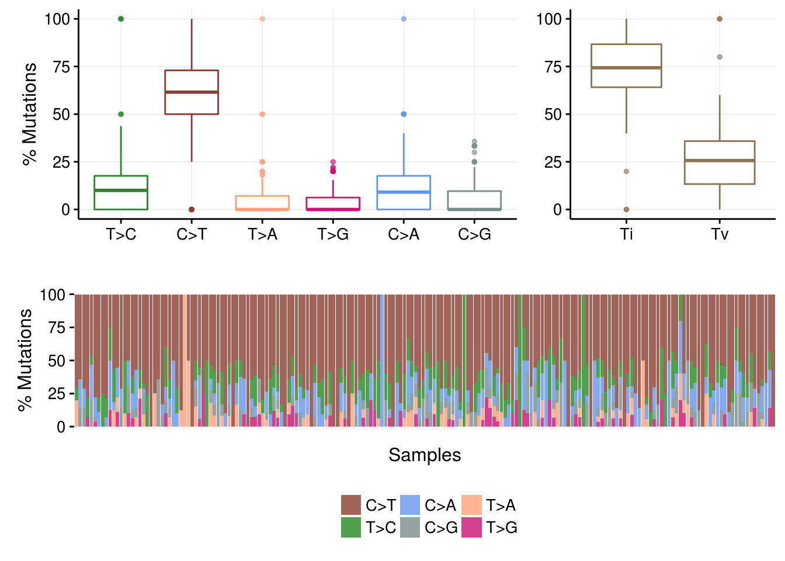

Author: Team BioSakshat
Last update: June 2017
Copyright © 2017 BioSakshat, Inc. All rights reserved.
The purpose of this section is to introduce you about the steps to install any R package from Bioconductor repository. We will demonstrate the installation and usage of Maftools package.
Bioconductor provides tools for the analysis and comprehension of high-throughput genomic data. Bioconductor uses the R statistical programming language, and is open source and open development. It has two releases each year, 1383 software packages, and an active user community.
Website: https://www.bioconductor.org/
How to install Bioconductor
Open R and type following commands. You must be connected to internet.
source(“https://bioconductor.org/biocLite.R”)
biocLite()
How to install bioconductor packages biocLite(c(“GenomicFeatures”, “AnnotationDbi”))
Further details https://www.bioconductor.org/install/
BiocViews allows you to browse through packages avaiable in Bioconductor. Packages are organized under different categories which will allow you to search easily.
https://www.bioconductor.org/packages/release/BiocViews.html#___Software
For demo purpose we will explore maftools [1].
Suppose you are doing a large scale sequencing project where you have done whole genome sequencing for ~100 patients and you have carried out variant detection pipeline to obtain variants (SNPs, Indels) in each sample. The variant information from each patient is aggregated in MAF file (Mutation Annotation Format. Now you want to analyze this MAF file. You searched in bioconductor for any pacakge that can help you to analyze MAF file and you came across maftools.
With advances in Cancer Genomics, Mutation Annotation Format (MAF) is being widley accepted and used to store somatic variants detected. The Cancer Genome Atlas Project has seqenced over 30 different cancers with sample size of each cancer type being over 200. Resulting data consisting of somatic variants are stored in the form of Mutation Annotation Format. This package attempts to summarize, analyze, annotate and visualize MAF files in an efficient manner from either TCGA sources or any in-house studies as long as the data is in MAF format [2].
MAF files contain many fields ranging from chromosome names to cosmic annotations. However most of the analysis in maftools uses following fields.
Mandatoty fields: Hugo_Symbol, Chromosome, Start_Position, End_Position, Variant_Classification, Variant_Type and Tumor_Sample_Barcode.
Complete specififcation of MAF files can be found on NCI TCGA page.
source(“https://bioconductor.org/biocLite.R”)
biocLite(“maftools”)
library(maftools);# laml file path
laml.maf = system.file('extdata', 'tcga_laml.maf.gz', package = 'maftools');
# read laml maf file
laml = read.maf(maf = laml.maf, removeSilent = TRUE, useAll = FALSE);## reading maf..## Mutation_Status not found. Assuming all variants are Somatic and validated.## Excluding 475 silent variants.## ID N
## 1: Samples 157
## 2: 5'Flank 3
## 3: IGR 5
## 4: Intron 8
## 5: RNA 10
## 6: Silent 449## Creating oncomatrix (this might take a while)..## Sorting..## Summarizing..## ID summary Mean Median
## 1: NCBI_Build 37 NA NA
## 2: Center genome.wustl.edu NA NA
## 3: Samples 192 NA NA
## 4: nGenes 1241 NA NA
## 5: Frame_Shift_Del 52 0.27083333 0
## 6: Frame_Shift_Ins 91 0.47395833 0
## 7: In_Frame_Del 10 0.05208333 0
## 8: In_Frame_Ins 42 0.21875000 0
## 9: Missense_Mutation 1342 6.98958333 7
## 10: Nonsense_Mutation 103 0.53645833 0
## 11: Splice_Site 92 0.47916667 0
## 12: total 1732 9.02083333 9## Frequently mutated genes..## Hugo_Symbol Frame_Shift_Del Frame_Shift_Ins In_Frame_Del
## 1: FLT3 0 0 1
## 2: DNMT3A 4 0 0
## 3: NPM1 0 33 0
## 4: IDH2 0 0 0
## 5: IDH1 0 0 0
## ---
## 1237: ZNF689 0 0 0
## 1238: ZNF75D 0 0 0
## 1239: ZNF827 1 0 0
## 1240: ZNF99 0 0 0
## 1241: ZPBP 0 0 0
## In_Frame_Ins Missense_Mutation Nonsense_Mutation Splice_Site total
## 1: 33 15 0 3 52
## 2: 0 39 5 6 54
## 3: 0 1 0 0 34
## 4: 0 20 0 0 20
## 5: 0 18 0 0 18
## ---
## 1237: 0 1 0 0 1
## 1238: 0 1 0 0 1
## 1239: 0 0 0 0 1
## 1240: 0 1 0 0 1
## 1241: 0 1 0 0 1
## MutatedSamples
## 1: 52
## 2: 48
## 3: 33
## 4: 20
## 5: 18
## ---
## 1237: 1
## 1238: 1
## 1239: 1
## 1240: 1
## 1241: 1## Done !Summarized MAF file is stored as an MAF object. MAF object contains main maf file, summarized data and an oncomatrix which is useful to plot oncoplots (aka waterfall plots).
laml;## An object of class MAF
## ID summary Mean Median
## 1: NCBI_Build 37 NA NA
## 2: Center genome.wustl.edu NA NA
## 3: Samples 192 NA NA
## 4: nGenes 1241 NA NA
## 5: Frame_Shift_Del 52 0.27083333 0
## 6: Frame_Shift_Ins 91 0.47395833 0
## 7: In_Frame_Del 10 0.05208333 0
## 8: In_Frame_Ins 42 0.21875000 0
## 9: Missense_Mutation 1342 6.98958333 7
## 10: Nonsense_Mutation 103 0.53645833 0
## 11: Splice_Site 92 0.47916667 0
## 12: total 1732 9.02083333 9str(laml);## Formal class 'MAF' [package "maftools"] with 10 slots
## ..@ data :Classes 'data.table' and 'data.frame': 1732 obs. of 17 variables:
## .. ..$ Hugo_Symbol : chr [1:1732] "ABCA10" "ABCA4" "ABCB11" "ABCC3" ...
## .. ..$ Entrez_Gene_Id : int [1:1732] 10349 24 8647 8714 23 64137 64241 25 55289 92370 ...
## .. ..$ Center : chr [1:1732] "genome.wustl.edu" "genome.wustl.edu" "genome.wustl.edu" "genome.wustl.edu" ...
## .. ..$ NCBI_Build : int [1:1732] 37 37 37 37 37 37 37 37 37 37 ...
## .. ..$ Chromosome : int [1:1732] 17 1 2 17 6 11 2 9 2 3 ...
## .. ..$ Start_Position : int [1:1732] 67170917 94490594 169780250 48760974 30554429 119031351 44079555 133760430 111542370 141011154 ...
## .. ..$ End_Position : int [1:1732] 67170917 94490594 169780250 48760974 30554429 119031351 44079555 133760430 111542370 141011154 ...
## .. ..$ Strand : chr [1:1732] "+" "+" "+" "+" ...
## .. ..$ Variant_Classification: Factor w/ 7 levels "Frame_Shift_Del",..: 7 5 5 5 5 5 5 5 5 5 ...
## .. ..$ Variant_Type : Factor w/ 3 levels "DEL","INS","SNP": 3 3 3 3 3 3 3 3 3 3 ...
## .. ..$ Reference_Allele : chr [1:1732] "T" "C" "G" "C" ...
## .. ..$ Tumor_Seq_Allele1 : chr [1:1732] "T" "C" "G" "C" ...
## .. ..$ Tumor_Seq_Allele2 : chr [1:1732] "C" "T" "A" "T" ...
## .. ..$ Tumor_Sample_Barcode : Factor w/ 192 levels "TCGA.AB.2802",..: 171 63 190 81 111 125 96 182 140 114 ...
## .. ..$ Protein_Change : chr [1:1732] "p.K960R" "p.R1517H" "p.A1283V" "p.P1271S" ...
## .. ..$ i_TumorVAF_WU : num [1:1732] 45.7 38.1 47 56.4 41 ...
## .. ..$ i_transcript_name : chr [1:1732] "NM_080282.3" "NM_000350.2" "NM_003742.2" "NM_003786.1" ...
## .. ..- attr(*, ".internal.selfref")=<externalptr>
## .. ..- attr(*, "index")= atomic (0)
## .. .. ..- attr(*, "__Variant_Type")= int [1:1732] 34 62 64 72 82 89 115 118 160 178 ...
## ..@ variants.per.sample :Classes 'data.table' and 'data.frame': 192 obs. of 2 variables:
## .. ..$ Tumor_Sample_Barcode: Factor w/ 192 levels "TCGA.AB.2802",..: 190 6 146 185 114 155 45 103 118 71 ...
## .. ..$ Variants : int [1:192] 34 25 23 21 20 20 20 19 18 18 ...
## .. ..- attr(*, ".internal.selfref")=<externalptr>
## ..@ variant.type.summary :Classes 'data.table' and 'data.frame': 192 obs. of 5 variables:
## .. ..$ Tumor_Sample_Barcode: Factor w/ 192 levels "TCGA.AB.2802",..: 190 6 146 185 45 114 155 103 71 118 ...
## .. ..$ DEL : int [1:192] 0 2 0 0 0 1 0 0 0 0 ...
## .. ..$ INS : int [1:192] 6 0 0 0 1 1 1 1 1 2 ...
## .. ..$ SNP : int [1:192] 28 23 23 21 19 18 19 18 17 16 ...
## .. ..$ total : num [1:192] 34 25 23 21 20 20 20 19 18 18 ...
## .. ..- attr(*, ".internal.selfref")=<externalptr>
## ..@ variant.classification.summary:Classes 'data.table' and 'data.frame': 192 obs. of 9 variables:
## .. ..$ Tumor_Sample_Barcode: Factor w/ 192 levels "TCGA.AB.2802",..: 190 6 146 185 45 114 155 103 71 118 ...
## .. ..$ Frame_Shift_Del : int [1:192] 0 1 0 0 0 1 0 0 0 0 ...
## .. ..$ Frame_Shift_Ins : int [1:192] 5 0 0 0 1 1 1 1 0 2 ...
## .. ..$ In_Frame_Del : int [1:192] 0 1 0 0 0 0 0 0 0 0 ...
## .. ..$ In_Frame_Ins : int [1:192] 1 0 0 0 0 0 0 0 1 0 ...
## .. ..$ Missense_Mutation : int [1:192] 25 16 22 15 16 15 16 15 17 11 ...
## .. ..$ Nonsense_Mutation : int [1:192] 2 3 0 1 1 3 2 1 0 2 ...
## .. ..$ Splice_Site : int [1:192] 1 4 1 5 2 0 1 2 0 3 ...
## .. ..$ total : num [1:192] 34 25 23 21 20 20 20 19 18 18 ...
## .. ..- attr(*, ".internal.selfref")=<externalptr>
## ..@ gene.summary :Classes 'data.table' and 'data.frame': 1241 obs. of 10 variables:
## .. ..$ Hugo_Symbol : chr [1:1241] "FLT3" "DNMT3A" "NPM1" "IDH2" ...
## .. ..$ Frame_Shift_Del : int [1:1241] 0 4 0 0 0 10 1 2 0 6 ...
## .. ..$ Frame_Shift_Ins : int [1:1241] 0 0 33 0 0 4 3 2 0 2 ...
## .. ..$ In_Frame_Del : int [1:1241] 1 0 0 0 0 0 1 0 0 2 ...
## .. ..$ In_Frame_Ins : int [1:1241] 33 0 0 0 0 0 0 0 0 6 ...
## .. ..$ Missense_Mutation: int [1:1241] 15 39 1 20 18 4 8 11 15 2 ...
## .. ..$ Nonsense_Mutation: int [1:1241] 0 5 0 0 0 8 5 1 0 1 ...
## .. ..$ Splice_Site : int [1:1241] 3 6 0 0 0 1 1 3 0 0 ...
## .. ..$ total : num [1:1241] 52 54 34 20 18 27 19 19 15 19 ...
## .. ..$ MutatedSamples : int [1:1241] 52 48 33 20 18 17 16 15 15 13 ...
## .. ..- attr(*, ".internal.selfref")=<externalptr>
## ..@ oncoMatrix : chr [1:1241, 1:192] "Missense_Mutation" "Missense_Mutation" "Frame_Shift_Ins" "" ...
## .. ..- attr(*, "dimnames")=List of 2
## .. .. ..$ : chr [1:1241] "FLT3" "DNMT3A" "NPM1" "IDH2" ...
## .. .. ..$ : chr [1:192] "TCGA.AB.2945" "TCGA.AB.2965" "TCGA.AB.2993" "TCGA.AB.2869" ...
## ..@ numericMatrix : num [1:1241, 1:192] 2 2 5 0 2 0 0 0 0 0 ...
## .. ..- attr(*, "dimnames")=List of 2
## .. .. ..$ : chr [1:1241] "FLT3" "DNMT3A" "NPM1" "IDH2" ...
## .. .. ..$ : chr [1:192] "TCGA.AB.2945" "TCGA.AB.2965" "TCGA.AB.2993" "TCGA.AB.2869" ...
## ..@ summary :Classes 'data.table' and 'data.frame': 12 obs. of 4 variables:
## .. ..$ ID : chr [1:12] "NCBI_Build" "Center" "Samples" "nGenes" ...
## .. ..$ summary: chr [1:12] "37" "genome.wustl.edu" "192" "1241" ...
## .. ..$ Mean : num [1:12] NA NA NA NA 0.271 ...
## .. ..$ Median : num [1:12] NA NA NA NA 0 0 0 0 7 0 ...
## .. ..- attr(*, ".internal.selfref")=<externalptr>
## ..@ classCode : Named chr [1:9] "" "Splice_Site" "Missense_Mutation" "Frame_Shift_Del" ...
## .. ..- attr(*, "names")= chr [1:9] "0" "1" "2" "3" ...
## ..@ maf.silent :Classes 'data.table' and 'data.frame': 475 obs. of 17 variables:
## .. ..$ Hugo_Symbol : chr [1:475] "ABCC11" "ACAN" "ACAT1" "ACCN2" ...
## .. ..$ Entrez_Gene_Id : int [1:475] 85320 176 38 41 59 284382 8728 56999 111 83440 ...
## .. ..$ Center : chr [1:475] "genome.wustl.edu" "genome.wustl.edu" "genome.wustl.edu" "genome.wustl.edu" ...
## .. ..$ NCBI_Build : int [1:475] 37 37 37 37 37 37 37 37 37 37 ...
## .. ..$ Chromosome : int [1:475] 16 15 11 12 10 19 5 3 3 15 ...
## .. ..$ Start_Position : int [1:475] 48244997 89401084 108009744 50452780 90695109 8808551 156920098 64532572 123071312 73045153 ...
## .. ..$ End_Position : int [1:475] 48244997 89401084 108009744 50452780 90695109 8808551 156920098 64532572 123071312 73045153 ...
## .. ..$ Strand : chr [1:475] "+" "+" "+" "+" ...
## .. ..$ Variant_Classification: chr [1:475] "Silent" "Silent" "Silent" "Silent" ...
## .. ..$ Variant_Type : chr [1:475] "SNP" "SNP" "SNP" "SNP" ...
## .. ..$ Reference_Allele : chr [1:475] "G" "C" "T" "C" ...
## .. ..$ Tumor_Seq_Allele1 : chr [1:475] "G" "C" "T" "C" ...
## .. ..$ Tumor_Seq_Allele2 : chr [1:475] "A" "T" "G" "G" ...
## .. ..$ Tumor_Sample_Barcode : chr [1:475] "TCGA.AB.2830" "TCGA.AB.2898" "TCGA.AB.2887" "TCGA.AB.3009" ...
## .. ..$ Protein_Change : chr [1:475] "p.I490I" "p.S1756S" "p.T185T" "p.L77L" ...
## .. ..$ i_TumorVAF_WU : num [1:475] 34.27 38.3 49.04 48.1 0.201 ...
## .. ..$ i_transcript_name : chr [1:475] "NM_032583.3" "NM_013227.2" "NM_000019.3" "NM_020039.2" ...
## .. ..- attr(*, ".internal.selfref")=<externalptr>getSampleSummary(laml);## Tumor_Sample_Barcode Frame_Shift_Del Frame_Shift_Ins In_Frame_Del
## 1: TCGA.AB.3009 0 5 0
## 2: TCGA.AB.2807 1 0 1
## 3: TCGA.AB.2959 0 0 0
## 4: TCGA.AB.3002 0 0 0
## 5: TCGA.AB.2849 0 1 0
## ---
## 188: TCGA.AB.2933 0 0 0
## 189: TCGA.AB.2942 0 0 0
## 190: TCGA.AB.2946 0 0 0
## 191: TCGA.AB.2954 0 0 0
## 192: TCGA.AB.2982 0 0 0
## In_Frame_Ins Missense_Mutation Nonsense_Mutation Splice_Site total
## 1: 1 25 2 1 34
## 2: 0 16 3 4 25
## 3: 0 22 0 1 23
## 4: 0 15 1 5 21
## 5: 0 16 1 2 20
## ---
## 188: 0 1 0 0 1
## 189: 1 0 0 0 1
## 190: 0 1 0 0 1
## 191: 0 1 0 0 1
## 192: 0 1 0 0 1getGeneSummary(laml);## Hugo_Symbol Frame_Shift_Del Frame_Shift_Ins In_Frame_Del
## 1: FLT3 0 0 1
## 2: DNMT3A 4 0 0
## 3: NPM1 0 33 0
## 4: IDH2 0 0 0
## 5: IDH1 0 0 0
## ---
## 1237: ZNF689 0 0 0
## 1238: ZNF75D 0 0 0
## 1239: ZNF827 1 0 0
## 1240: ZNF99 0 0 0
## 1241: ZPBP 0 0 0
## In_Frame_Ins Missense_Mutation Nonsense_Mutation Splice_Site total
## 1: 33 15 0 3 52
## 2: 0 39 5 6 54
## 3: 0 1 0 0 34
## 4: 0 20 0 0 20
## 5: 0 18 0 0 18
## ---
## 1237: 0 1 0 0 1
## 1238: 0 1 0 0 1
## 1239: 0 0 0 0 1
## 1240: 0 1 0 0 1
## 1241: 0 1 0 0 1
## MutatedSamples
## 1: 52
## 2: 48
## 3: 33
## 4: 20
## 5: 18
## ---
## 1237: 1
## 1238: 1
## 1239: 1
## 1240: 1
## 1241: 1getFields(laml);## [1] "Hugo_Symbol" "Entrez_Gene_Id"
## [3] "Center" "NCBI_Build"
## [5] "Chromosome" "Start_Position"
## [7] "End_Position" "Strand"
## [9] "Variant_Classification" "Variant_Type"
## [11] "Reference_Allele" "Tumor_Seq_Allele1"
## [13] "Tumor_Seq_Allele2" "Tumor_Sample_Barcode"
## [15] "Protein_Change" "i_TumorVAF_WU"
## [17] "i_transcript_name"plotmafSummary(maf = laml, rmOutlier = TRUE, addStat = 'median', dashboard = TRUE);## Warning: Removed 1 rows containing non-finite values (stat_boxplot).
#We will draw oncoplots for top ten mutated genes. (Removing non-mutated samples from the plot for better visualization)
oncoplot(maf = laml, top = 10, removeNonMutated = TRUE);
laml.titv = titv(maf = laml, plot = FALSE, useSyn = TRUE);
#plot titv summary
plotTiTv(res = laml.titv);
cummeRbund: Allows for persistent storage, access, exploration, and manipulation of Cufflinks high-throughput sequencing data. In addition, provides numerous plotting functions for commonly used visualizations.
https://bioconductor.org/packages/release/bioc/html/cummeRbund.html